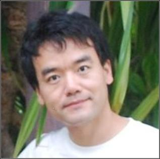

|  |
Associate Professor Email: xiaoming [at] iscas [dot] ac [dot] cn |
News
June. 2020, Our paper "Scene Sketcher: Fine-grained Image Retrieval with Scene Sketch" has been accepted by ECCV 2020.
Jan. 2020, Our paper "Weakly Supervised Adversarial Learning for 3D Human Pose Estimation from Point Clouds" has been accepted by TVCG.

Short Bio Xiaoming is currently an associate professor at Bejing Key Laboratory of Human-computer Interactions, Institute of Software, Chinese Academy of Sciences (CAS). He obtained his Ph.D. degree from National Laboratory of Pattern Recognition (NLPR), Institute of Automation, CAS in 2008. After that, he was a postdoctoral research fellow at Institute of Computing Technology, CAS. He has also worked at Department of Electrical & Computer Engineering in National University of Singapore (NUS) as a research fellow in 2012-2013. He is a member of IEEE. His main research topics are in computer vision, and specifically related to camera calibration, 3D reconstruction, omnidirectional vision, simultaneous-localization and mapping (SLAM), human motion tracking and synthesis. He received the K.C.Wong post-doctoral fellowship award in 2009. See also a complete CV Looking for graduate students, RAs to work on computer vision. Interested candiates can directly send resume to me. (This web page last updated on July 2015.) |